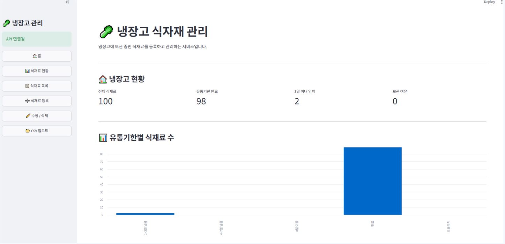
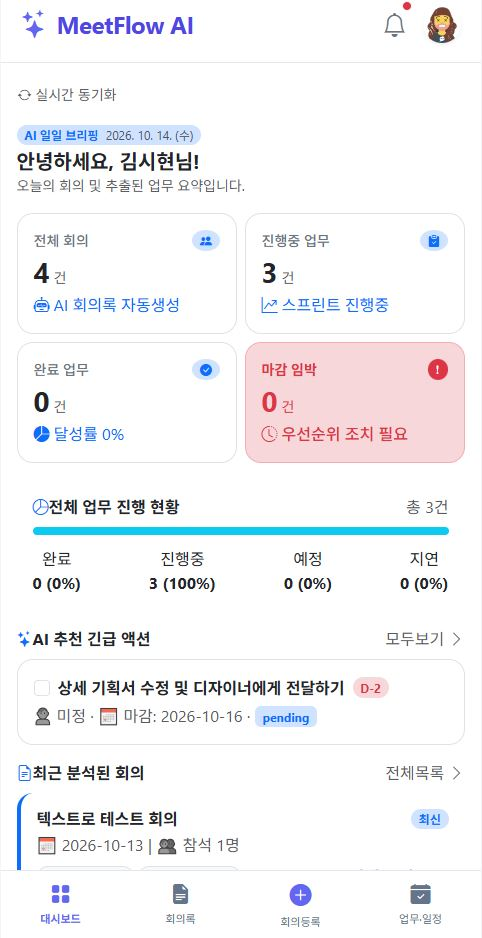

AI Backend · Python / FastAPI
데이터를 구조화하고,
백엔드로 단단하게 연결합니다.
다년간의 현업에서 길러낸 정밀한 분석력을 강점으로, Python 및 FastAPI를 활용한 효율적인 데이터 처리와 백엔드 API를 개발합니다.
(냉장고 식재료 관리, 축제 예측 등)
PROJECTS
대표 프로젝트
수업과 팀 프로젝트에서 제가 직접 맡은 작업을 정리했습니다.

01 · Dashboard
지역축제 데이터 분석 및 방문객 예측 시스템
전국 문화축제 데이터를 기반으로 축제 검색, 기간별 방문객 추이 분석, 대중교통 인프라 분석, 축제 비교 및 방문객 수 예측을 제공하는 Streamlit 기반 데이터 분석 프로젝트입니다
내 기여 데이터 분석 및 Streamlit 개발

02 · Docker 데이터 플랫폼
냉장고 식재료 관리 시스템
FastAPI, PostgreSQL, Streamlit을 이용하여 냉장고 식재료와 유통기한을 관리하는 프로젝트입니다.
내 기여 데이터 · PostgreSQL

03 · AI Meeting Assistant
AI 기반 스마트 회의·업무 관리 플랫폼
주요 안건, 결정사항, 담당자, 업무, 마감일을 추출하고 일정과 연계하여 관리할 수 있는 AI 회의 관리 플랫폼이다.
내 기여 Docker 컨테이너 · 대시보드

04 · 나만의 페이지 만들기
블룸위크 꽃 정기배송 구독 서비스
HTML과 CSS를 활용하여 꽃 정기배송 구독 서비스의 메인 페이지 및 상품 소개 UI를 구현한 개인 프로젝트입니다.
내 기여 HTML · CSS
EXPERIENCE
제가 맡았던 일
기술 이름만 나열하지 않고 어디서 어떻게 사용했는지 적었습니다.
분석 및 Streamlit 개발
Python로 데이터 수집, 전처리,
머신러닝 모델 학습 및 Streamlit 웹 애플리케이션 구현까지 활용
pandas로 데이터 전처리 및 탐색적 데이터 분석
· 3인 프로젝트
데이터와 PostgreSQL
식재료 데이터 준비 - 식재료 데이터 수집 및 정제
DB/테이블 설계 - 테이블 스키마 구축
데이터 적재 - 파이썬 DB 마이그레이션
DB 연결 - FastAPI 세션 연결
기본 조회 API - 조건별 검색 API 구현
Docker 컨테이너화 및 테스트 자동화
Python 3.11 기반 멀티 컨테이너 환경 최적화
볼륨 마운트 설정 및 pytest 테스트 자동화 구축
jinja 기반 모바일 친화적 대시보드 UI 연동
· 2인 팀 프로젝트
HTML·CSS
웹페이지 레이아웃 구조 설계
CSS를 활용한 반응형 UI 및 스타일링 구현
· 개인 프로젝트
CONTACT
AI 개발자로
첫걸음을 준비하고 있습니다.
현재 인턴십 또는 신입 기회를 찾고 있습니다. 궁금한 점이 있다면 편하게 연락해 주세요.